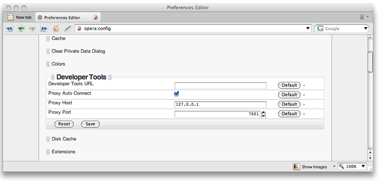
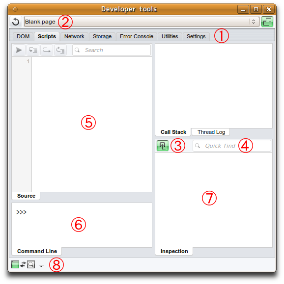
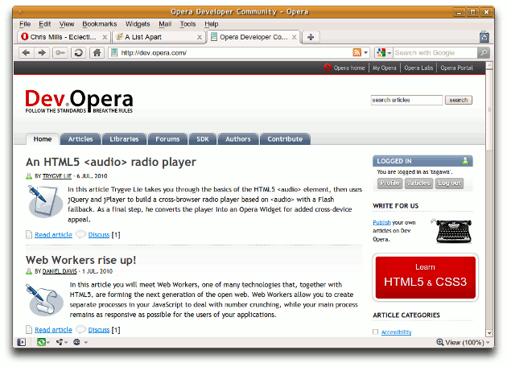
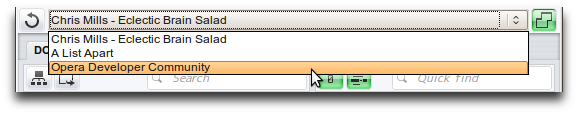
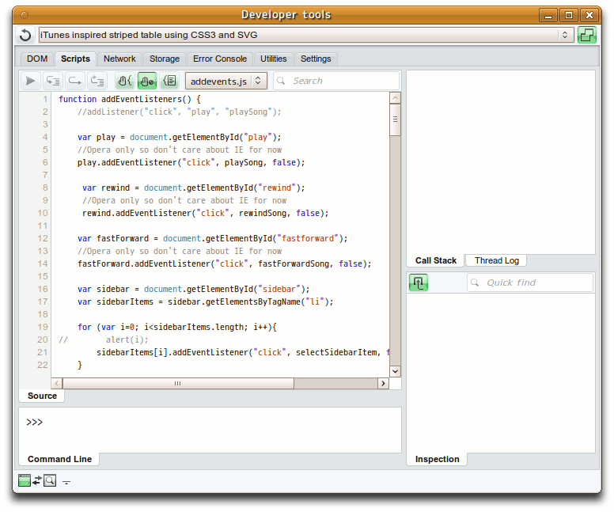
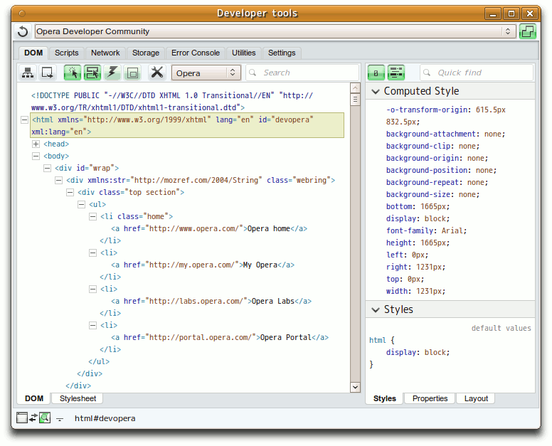
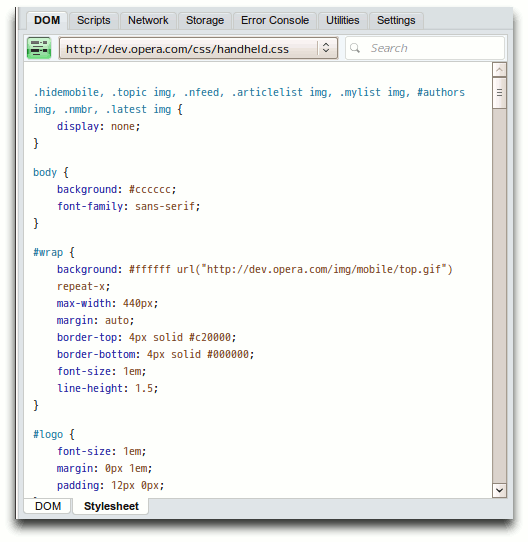
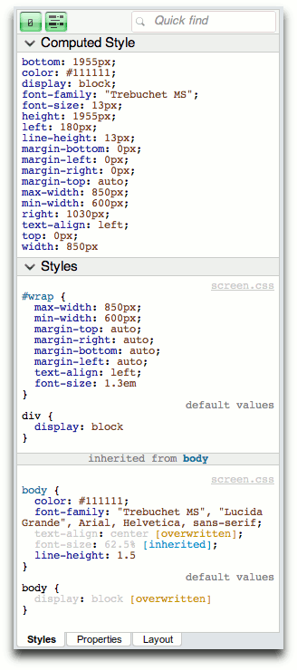
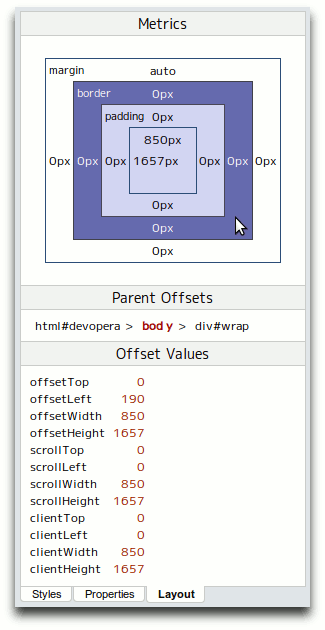
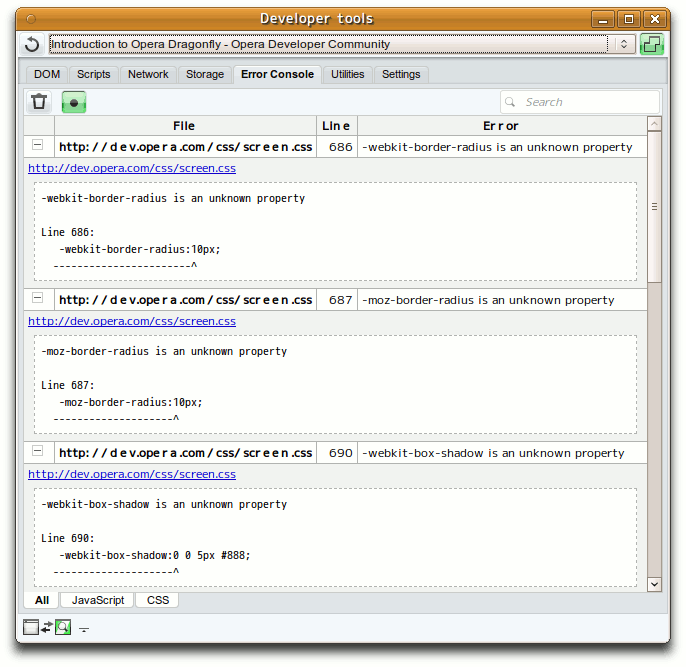

Introduction to Opera Dragonfly
This article is deprecated; instead, consult our Opera Dragonfly Field Guide for up-to-date information.
Introduction
Now reaching a mature stage of development, Opera Dragonfly is Opera's comprehensive set of developer tools, designed to give developers a lightweight-but-powerful application that provides effective mechanisms for web standards debugging and problem solving without slowing down the browser, and fits in nicely with the development workflow. The current feature set includes:
- JavaScript debugger
- DOM inspector
- CSS inspector
- Command Line to allow commands to be inputed
- Error Console that outputs validation errors and warnings exhibited by the CSS and JavaScript connected with the page
- Proxy to allow debugging directly on mobile devices
- Network analyzer
- Cookie and local storage viewer
- Colour picker
The current release version is an alpha, so it is currently a little rough round the edges; also we decided to implement all the most critical features first, and go from there - we have big plans afoot for our developer tools and you can expect to see a lot of fantastic additions in coming months. It is going to be released under an open source BSD licence.
This articles structure is as follows:
Note: Opera Dragonfly is not to be confused with the original Opera developer tools (available at http://dev.opera.com/articles/view/opera-developer-tools/ ) - these tools served us well, but are now being superseded by Opera Dragonfly.
How to access Dragonfly
Dragonfly is built into the Opera desktop browser and there are four ways to launch it:
- From Opera's red menu button, select Page > Developer tools > Opera Dragonfly.
- If you have a menu bar, from the Tools menu select Advanced > Opera Dragonfly (see Figure 1).
- Right-click on any element in a web page and select Inspect Element from the context menu.
- Press Ctrl+Shift+i on your keyboard.
Figure 1: Starting up the Dragonfly client from the menu bar.
Note: There might be an occasion where you'll want to revert to a different version of the Dragonfly client for whatever reason. If you want to do this, go to the Opera config page, find the Developer Tools section, and make sure it looks like Figure 2. The URL in the Developer Tools URL field points to the Dragonfly client - this needs to be populated with the URL of the client you want to switch to.
Figure 2: The opera:config Developer Tools configuration section.
Once you've made the change and clicked save, you'll need to restart Opera for the changes to take effect.
An overview of the UI
The Dragonfly client looks like Figure 3 by default. Let's explore it now.
Figure 3: The default Dragonfly UI.
The different areas are as follows:
- The Script, DOM and Console tabs: These are the main functionality selectors in the UI, which allow you to check out different facets of the web sites loaded into the Opera browser.
- The site/widget selector: This shows which site or widget is currently loaded and active in Dragonfly. The drop down menu displays the sites and widgets currently available and when you select one, it becomes the active site/widget in Dragonfly.
- Context sensitive tools: Different tools are shown in these areas, depending on which main tab is selected. We'll look at all the different options in detail later on.
- Search boxes/Quick find: Using these, you can search for different terms inside the various panes.
- The main information window: This shows the full contents of the different scripts, CSS files, etc. you can select from the site information window — the contents will differ depending on which main tab is currently active. Again, we'll look at the different contents later on.
- The command line: This allows you to enter JavaScript commands to be evaluated by Opera Dragonfly.
- Information panels: These panels vary depending on which main tab is selected — they display different information about the scripts, styles, etc. that you are currently examining. Again, we'll look at these further later on in the article.
- This indicator shows the status of the web sites being debugged and the debugger, showing what is active at any one time.
Now that you're familiar with the basics of Dragonfly, let's look at what you can do in the different contexts available.
How to perform basic tasks
Let's start by loading up a few web sites in the version of Opera that Dragonfly is active inside — feel free to open up any sites that you are interested in examining. My browser window currently looks like Figure 5.
Figure 5: Some of my favourite web sites open in the Opera desktop browser.
When you open the sites, they will appear in the drop-down menu inside the Dragonfly UI, as shown in Figure 6.
Figure 6: The web sites appear in the Dragonfly site/widget selector drop-down menu.
The Script tab
Making sure that the Script tab is selected, select one of ther sites in the drop down menu, and click on one of the black information lines that appear along with the site URL in the site information window. You'll see the display update as shown in Figure 7. Here I've selected an experiment from one of my colleague's web sites, but you can choose any example you like.
Figure 7: Examining a JavaScript file in Dragonfly.
You can set a breakpoint by clicking on the line numbers - see Figure 8 for examples.

Figure 8: Setting breakpoints in the JavaScript.
When you set a breakpoint and then run the script (ie by doing something that causes the part of the script you've set a breakpoint on to run, such as click a button), the script will stop executing at the breakpoint, and you can then inspect what the environment looks like in that instant, ie what values the different variables have and so on. See Figure 9 for the result of me clicking a button that executed the playSong() function - the arrow shows the breakpoint that the code stopped at.

Figure 9: the arrow shows the break point that the script execution paused at.
Notice the HTML DOM "breadcrumb trail" at the bottom of the window, which indicates where in the DOM Tree the item being examined is at. This appears in all the views. There is also a button in the top left of this tab called "Reload selected window in the host" - this, predictably, reloads the currently selected web page in the browser, to refresh it to its initial state.

Figure 10: The main button controls in the Script view.
The main buttons (see Figure 10) provide the following functions, from left to right:
- Continue (F8): This continues the currently selected script after it has stopped at a breakpoint.
- Step into (F11): This allows you to step into the next function in the stack, after the current function the breakpoint is contained within.
- Step over (F10): This allows you to step to the next line after the one the breakpoint is set on - you can use this multiple times to follow the execution path of the script.
- Step out (Shift + F11): This causes you to step out of the function.
- Stop at new thread: This is an on/off toggle that selects whether the script will stop at the next new thread when run.
- Stop at error: This is an on/off toggle that selects whether the script will stop at the next error when run.
- Log threads: This is an on/off toggle that selects whether the threads will be logged in the threads panel (see top right hand corner.)
The Call Stack panel
The Callstack shows the nature of the runtime environment at the time of a specific function call - whathas been called, and in what order. For example, function A calls B, which calls C. First C returns, then B, then A. Each function call will typically change something in the environment, for example changing the value of a variable. Figure 11 shows an example of how the callstack looks after I've executed up to my first breakpoint, then stepped into the next function call in the stack.

Figure 11: The Call Stack panel, showing the different function calls that make up the call stack.
You can now click on the different calls in the stack to move the identifying arrow in the script window to the position of that call. Try it!
The Thread Log panel
The Thread Log panel records details of the different threads running through the script you are currently examining, provided you have the Log threads button pressed in (see above). Figure 12 shows an example from the Thread Log window after I've run my example code.

Figure 12: The Thread Log panel in action.
There are two buttons in the Thread Log panel, as follows:
- Clear thread log: This does what its name suggests.
- Export thread log: This exports the current thread log to a plain text document in a new browser window.
The Frame Inspection panel
The Frame Inspection panel lists all of the property values etc for the current call stack, as shown in Figure 13 - frames are specific parts of the call stack. You can change frames by selecting a call in the Call Stack panel.

Figure 13: The Frame Inspection panel, showing all the current property values etc for the currently selected call in the stack.
The button in the top left hand corner of the Frame Inspection panel is the "Hide default properties in global scope" button, which does as its name suggests. Try it out.
The Command Line
The command line panel allows you to input and execute JavaScript commands, to find information and perform tests on the JavaScript code you are currently examining. For example, try entering some simple commands such as:
var a = 1; var b = 2; var c = a + b;
document.getElementsByTagName('div');
The DOM tab
Now try selecting the DOM tab and selecting a web site. The display will change to show the DOM of the selected site in a typical expandable/collapsible view, plus Styles, DOM Properties and Layout tabs on the right hand side, which I'll cover later on (see Figure 14). If you change the tab selection in the second set of tabs down from DOM to Stylesheets, the display in the site information window will change to show what CSS is attached to each web page, and how. Let's keep it on DOM for now.
Figure 14: Examining the DOM of a site in Dragonfly.
Try playing with the DOM tree for a while, selecting different elements and seeing how this affects the display. Notice the green highlight that indicates the currently selected element.
Figure 15: The main button controls in the DOM view.
The main buttons (see Figure 15) in the DOM view provide the following functions, from left to right:
- Expand the DOM tree: Clicking this button expands the whole DOM tree.
- Export current DOM view: Click on this to open up a new tab - Export - which contains the absolute current DOM view, ie collapsed nodes are not shown at all.
- Find element by clicking: When you have this button pushed in, you can click anywhere on the page to select different elements in the DOM inspector.
- Highlight by mouse hover: When this button is pressed in, you will get an outline highlighting the currently selected element in the DOM inspector when it is hovered over with the mouse.
- Update DOM when a node is removed: Only when this button is pressed in, will you see the results of running a JavaScript command to select a node and remove it from the DOM programmatically, for example if you run something like
div.parentNode.removeChild(div);on the Dragonfly command line. - Draw a border on to selected elements
- Show comment nodes: Push this in/out to show/hide HTML and CSS comments.
- Show whitespace nodes: Push this in/out to show/hide whitespace nodes.
- Show DOM in tree view: When this is pushed in, it shows "tree branches" connecting the different nodes, to give a better idea of the DOM tree hierarchy. Which view style you use is down to personal preference.
The Stylesheets tab
Now let's try clicking on the Stylesheets tab. This will bring up information on the different stylesheets associated with the web sites or widgets you have loaded. Selecting different stylesheets will change the view to show the contents of the different stylesheets in the bottom Stylesheet tab, as seen in Figure 16.
Figure 16: Examining stylesheets in Dragonfly.
There is a single button at the top left of the Stylesheets tab, "use shortcuts for properties", which toggles between seeing all CSS properties as expanded longhand, and just seeing the single-line shorthand values (where appropriate.)
Now we've looked at what is going on in the left hand side of the screen, let's turn our attention to the right.
The Styles tab
The Styles tab contains two sections, Computed Style and Styles, as seen in Figure 17.
Figure 16: The two sections of the Styles tab - Computed style and Styles.
The Styles section shows all the CSS that is acting on the currently selected DOM node, and the Computed style section shows the actual computed style values that are in effect on the currently selected on DOM node. As you'll see form Figure 17, it rather usefully splits the styles up to show what styles are directly applied to the DOM node, and what stryles are inherited from parent nodes.
This tab has two buttons in its top left hand corner, as seen in Figure 18 - they are, from left to right:
- Hide initial values in computed styles: This does as expected - pushing it in or out hides/shows initial values in computed styles.
- Hide shorthands in computed styles: As expected, pushing it in or out hides/shows shorthand values in computed styles.

Figure 18: The Styles tab buttons.
The Properties tab
This tab shows all the attributes of the DOM object for the selected element. Note that these are different from the HTML attributes on the selected element - if you select an img element for example, you will get the full URL of the source they point for the src DOM attribute. See Figure 19 for an example.
Figure 19: The Properties tab.
This tab has one button in its top left hand corner, "hide empty strings and null values", which does what it says on the tin — pushing it in and out hides/shows empty strings and null values.
The Layout tab
This rather useful tab shows a visual representation of the box model as it looks for the currently selected DOM node, along with a breadcrumb trail showing the node in relation to its parent and child nodes, and a list of the offset values, as shown in Figure 20.
Figure 20: The layout tab.
Error Console
Finally, click on the Error Console tab - this will result in the display changing to show CSS and JavaScript validation errors and warnings, as shown in Figure 21.
Figure 21: The error console view shows CSS and JavaScript warnings and errors.
Figure 22: The main button controls in the error console view.
The buttons in the error console view (see Figure 22) do the following, from left to right:
- Clear log: This clears the current contents of the error console tab.
- Use selected runtime as filter: This shows the error console output for just the selected runtime, as opposed to all runtimes.
Summary
In this article we've covered the basics of Dragonfly including how to install it, and given you a guided tour of the basics. To find out more, explore the Dragonfly website, and ask questions and let us know what you think at the Dragonfly forums.
Chris Mills

Chris Mills is a web technologist, open standards evangelist and education agitator, currently working at Opera Software in the developer relations team. He spends most of his time writing articles about web standards for dev.opera.com and other publications (such as .net mag and A List Apart), giving talks at universities and industry conferences, and lobbying universities to improve their web education courses. He believes that education is the answer to everything, but in particular he is passionate about using education to improve the overall content quality, accessibility, usability and future-viability of the Web.
He is the creator of the Opera Web standards curriculum, contributor to the WaSP InterACT project, and coauthor of InterACT with web standards: A Holistic Approach to Web Design. In August 2011, he also accepted the position of co-chair of the newly-formed Web Education Community Group.
Outside work he is a heavy metal drummer, proud father of three and lover of good beer.
This article is licensed under a Creative Commons Attribution, Non Commercial - Share Alike 2.5 license.
Comments
The forum archive of this article is still available on My Opera.
No new comments accepted.